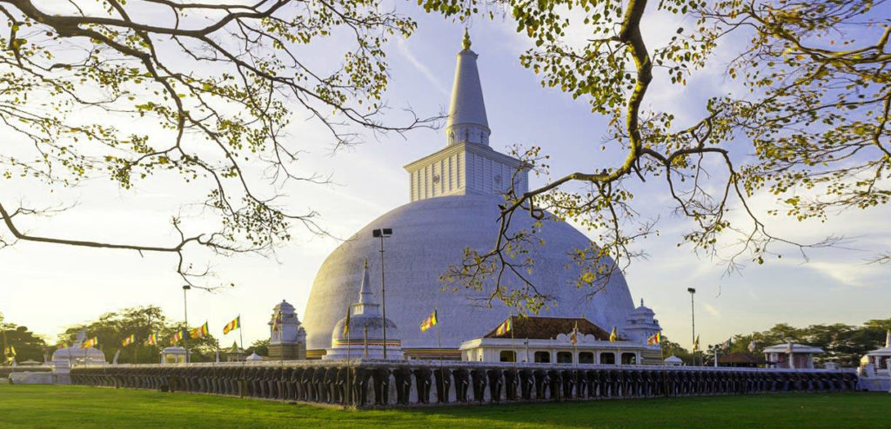
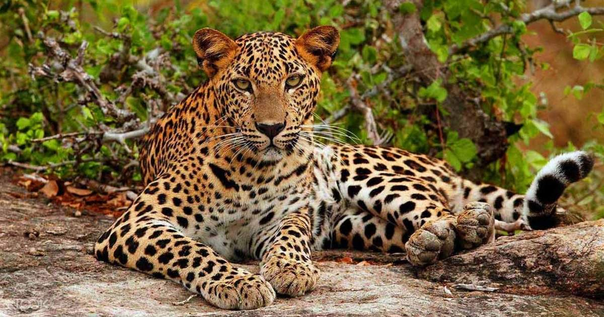
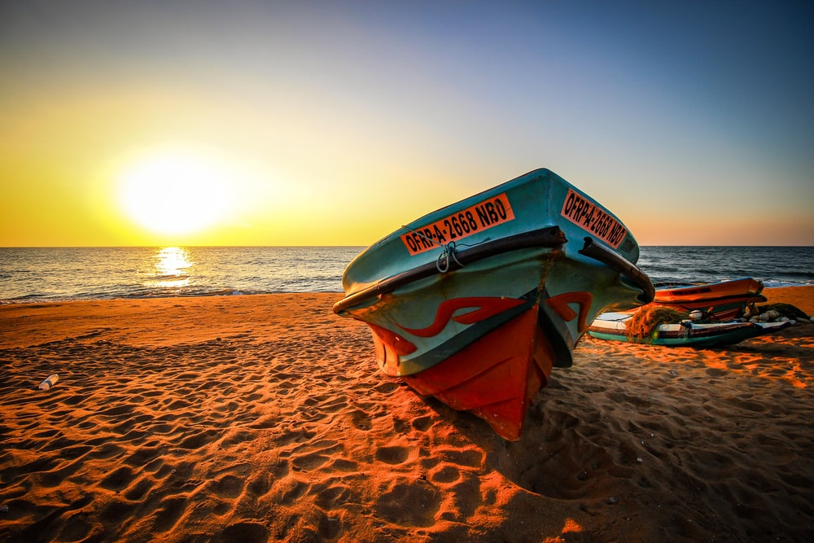
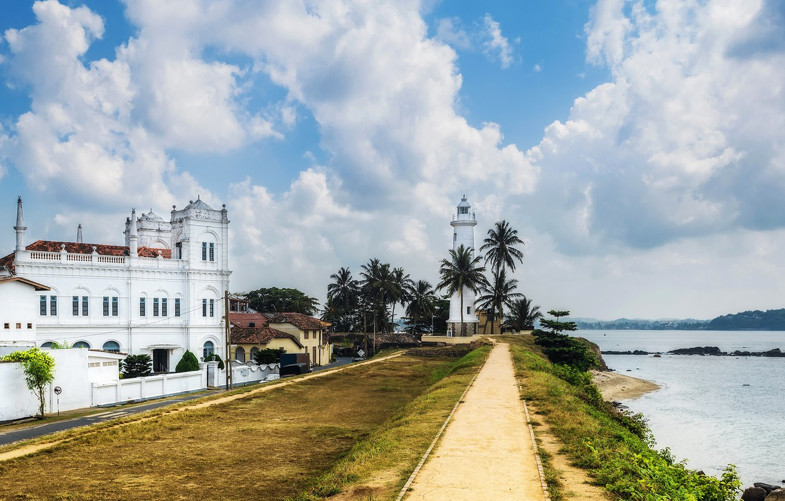
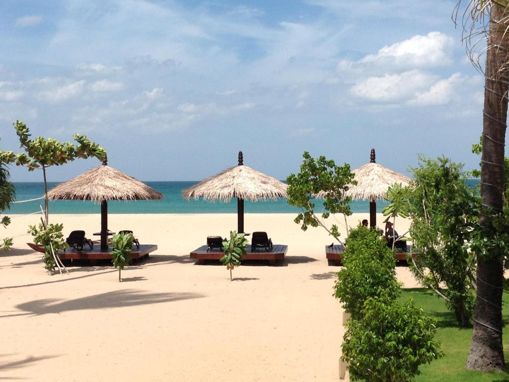

Things to do in Sri Lanka
The island country of Sri Lanka is known as the gem of the Indian Ocean. With diverse landscapes and cultures spread across the different regions of Sri Lanka, there really is somethng for everyone.
This list is quite adventurous and involves a few hikes and all things action! The culture and food of Sri Lanka are incredibly unique and will captivate you throughout your adventures.
| Places to Visit | Things to Do | Distance from Colombo |
|---|---|---|
| Anuradhapura  | The ruins of Anuradhapura are one of South Asia’s most evocative sights. The sprawling complex contains a rich collection of archaeological and architectural wonders: enormous dagobas (brick stupas), ancient pools and crumbling temples, built during Anuradhapura’s thousand years of rule over Sri Lanka. | 200.6 Km |
Kandy |
Kandy is a large city in central Sri Lanka. It's set on a plateau surrounded by mountains, which are home to tea plantations and biodiverse rainforest. The city's heart is scenic Kandy Lake (Bogambara Lake), which is popular for strolling. Kandy is famed for sacred Buddhist sites, including the Temple of the Tooth (Sri Dalada Maligawa) shrine, celebrated with the grand Esala Perahera annual procession. | 122.4 Km |
| Yala  | Yala National Park is a huge area of forest, grassland and lagoons bordering the Indian Ocean, in southeast Sri Lanka. It’s home to wildlife such as leopards, elephants and crocodiles, as well as hundreds of bird species. Inland, Sithulpawwa is an ancient Buddhist monastery. Nearby caves contain centuries-old rock paintings. Southwest, Magul Maha Viharaya also has ancient Buddhist ruins. Both are pilgrimage sites. | 302.3 Km |
| Negombo  | The major beach resort in the West Coast is Negombo. The wide sandy beaches and the safe sea are the main attractions of Negombo and it is perfectly located within 7 km from the Bandaranaike International Airport in Katunayake, Sri Lanka. Negombo has a small port, and its economy is mainly based on tourism and its centuries-old fishing industry. Negombo is a traditional fishing town in Sri Lanka, and no wonder the town is a gourmet food lover’s paradise with seafood available in plenty. Negombo also produces spices, ceramics and brassware. The town has a majority of Roman Catholics along with Buddhists, Hindus and Muslims while it has been given the name “Little Rome” due to the highly ornate Portuguese-era Roman Catholic churches found within the township. | 38.2 Km |
| Galle  | Galle is the capital city of the Southern Province of Sri Lanka. The town has a World Heritage Site to its name and that is predominantly responsible for its popularity with tourists. This is the 300-year-old Dutch Fort, but there are other historical buildings to view as well. Once in Galle Town your best bet to travel around in a tuk tuk or if you prefer you can walk around the town as well; it gives a better feel of the place. A few Kilometres away from Galle, there is Mirissa, where you can take a boat for Whale and Dolphin Watching which is going to be a fascinating experience of your life. | 146 Km |
| Trincomalee | Trincomalee is a great little town on the east coast of Sri Lanka. Trincomalee offers beautiful white sand and is one of the best beaches of Sri Lanka. The east coast is upcoming and way more quiet than south, which is a perfect reason to plan a visit. Trincomalee is surrounded by wildlife, hilltops and rock formations. Take about 2 or 3 full days in this town because there are quite some great things to do in Trincomalee. Few kilometres away from Trincomalee there is the Nilaveli Beach where the blue ocean waits for you. You can visit the Pigeon Island and have a lot of fun doing scuba diving, snorkeling and relaxing there in this beautiful island. | 265.3 Km |
| The details may change upon the tour package. The above mentioned details are for daily excursions. |